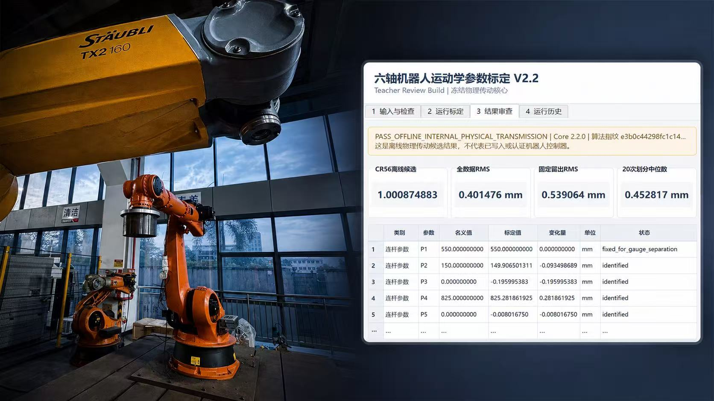
六轴工业机器人离线运动学参数标定
面向六轴工业机器人的离线运动学参数标定项目，结合标准 DH、Kabsch/SVD 与最小二乘验证参数可辨识性与稳定性。
查看项目长期使用 AI Agent 与各类数字工具提升自己的工作效率，同时为不同类型的客户提供远程支持与数字化服务。
围绕实际需求开发插件、Skills、轻量工具与 Web 应用，并持续探索 Web2、Web3 与 AI 辅助开发工作流。
我研究机器人安全与可靠性。重点是通过测试与验证，让机器人可靠地完成任务、抵御攻击，并安全地在人群中工作。
围绕经济、社会、科技等议题开展独立研究与长期思考，并尝试通过文章、研究报告和论文等形式沉淀观点、证据与结论。

面向六轴工业机器人的离线运动学参数标定项目，结合标准 DH、Kabsch/SVD 与最小二乘验证参数可辨识性与稳定性。
查看项目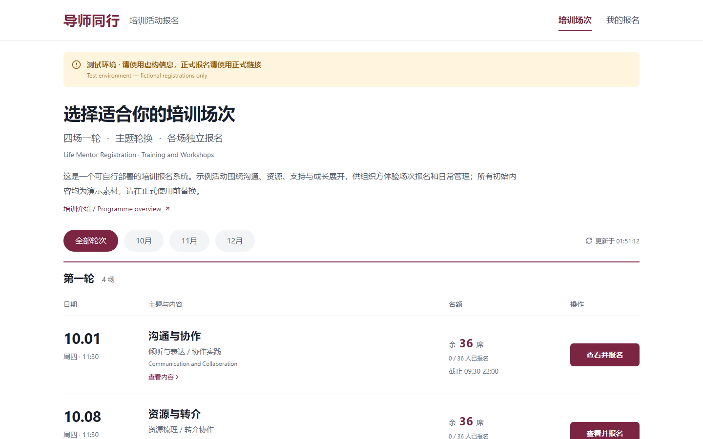
为校内生活导师培训开发的轻量报名系统，支持免注册报名、按轮次浏览、单场名额与截止控制，以及场次管理和名单导出。
查看项目
围绕马克思主义、技术、社会与人工智能等议题整理长期思考、评论与随笔。
查看文章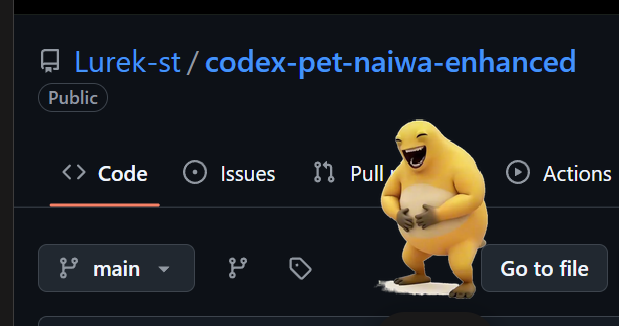
做了一个会打字、会大笑、拖着走还会放屁的 Codex 奶蛙 🐸⌨️💨
查看项目超过3年
持续实践中
超过2年
超过3年
超过1年
超过2年
多语种交流
运动、游戏、音乐、阅读、影视作品、旅行，以及一些持续很久的好奇心。
THINK & EXPLORE
一个问题，通常会带来更多问题。
Questions tend to lead to more questions.
我经常把 AI 当作一种思考媒介，从技术与研究，到社会现象，再到那些一时没有答案的奇怪问题。
一次交流很少真正结束一个问题，更多时候，它只是把问题拆开，再引向几个新的方向。
COMPANIONS
从一只陪伴我很久的大金毛，到现在家里的一窝孟加拉豹猫。
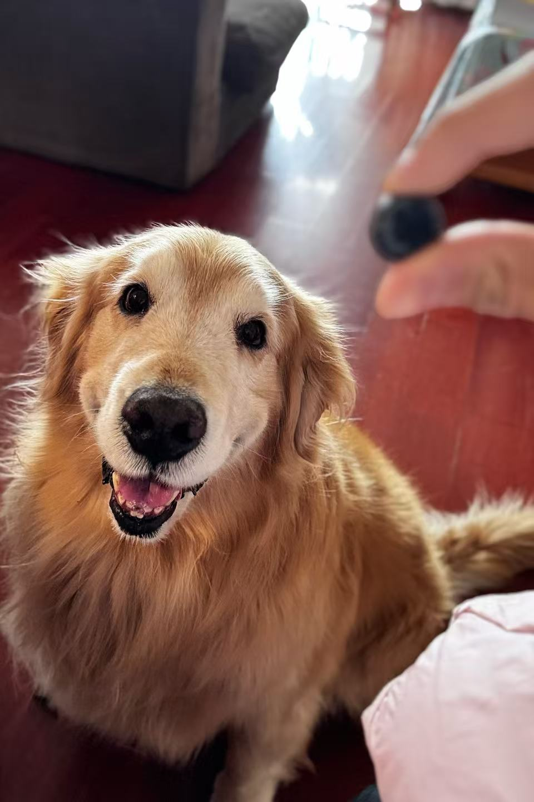
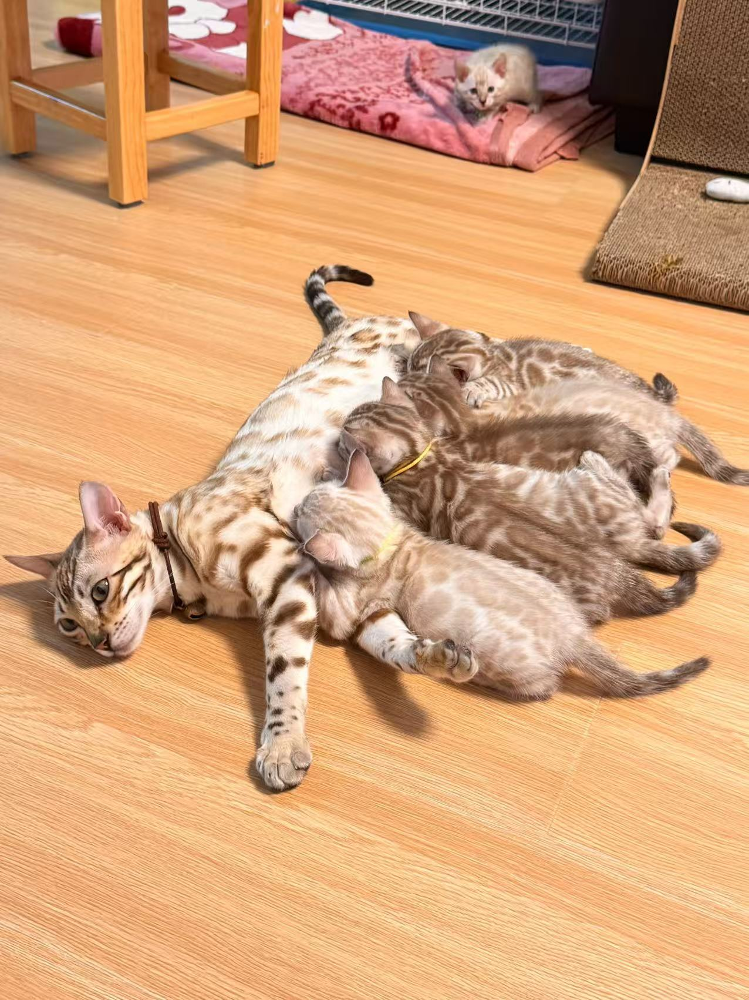
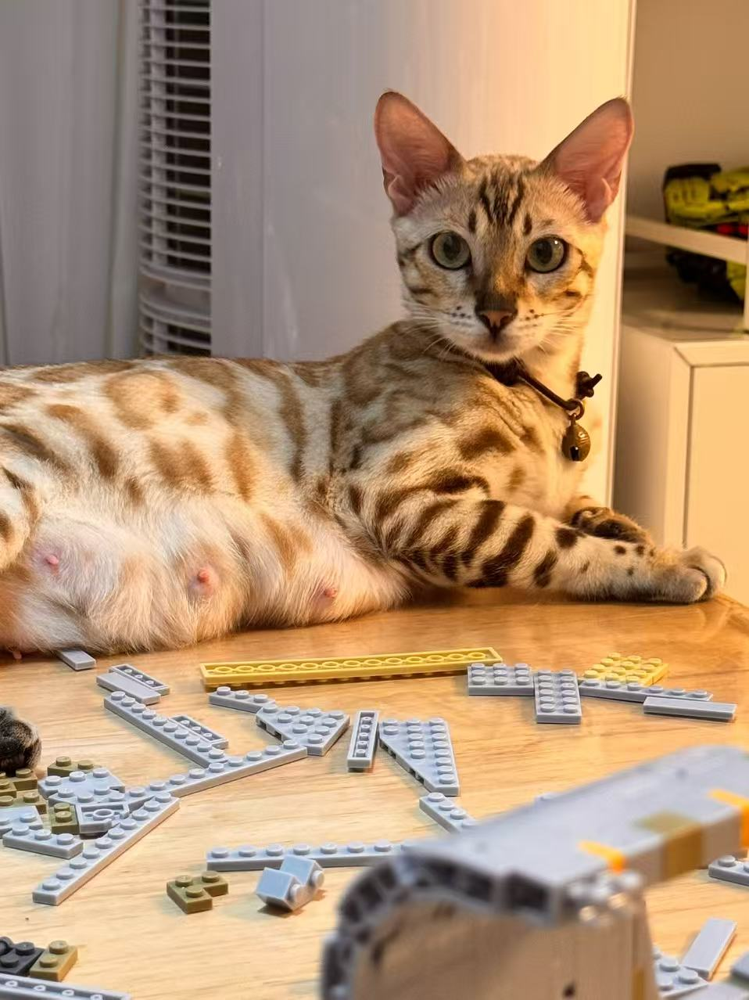
STAY MOVING / SPORTS I LOVE
PLAY / GAMES I LOVE
BRICK BY BRICK / 从小玩到大的兴趣
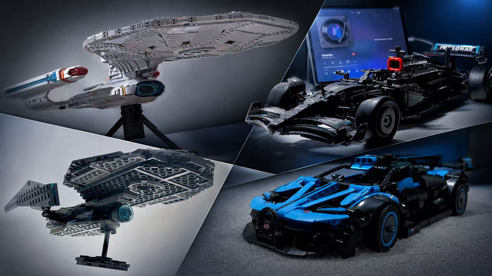
STORIES I LIKE
科幻、荒诞喜剧、社会讽刺，以及一些风格鲜明的动作作品；但最打动我的，往往还是其中的理想主义。
音乐一直在生活的背景里。
我的音乐库里，也已经慢慢攒下了 1900 多首歌。
在路上
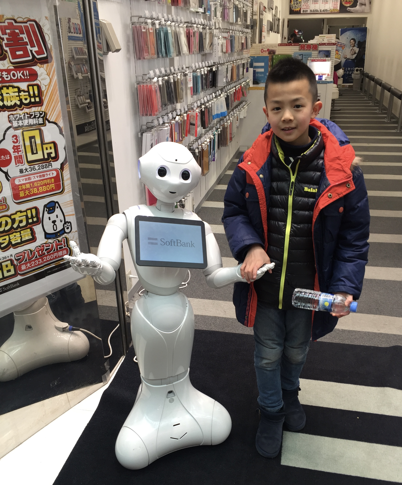
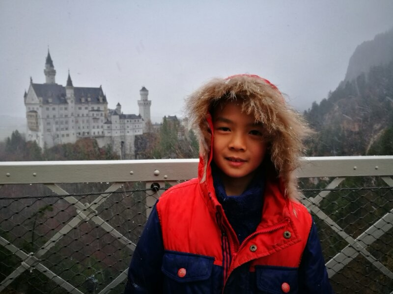
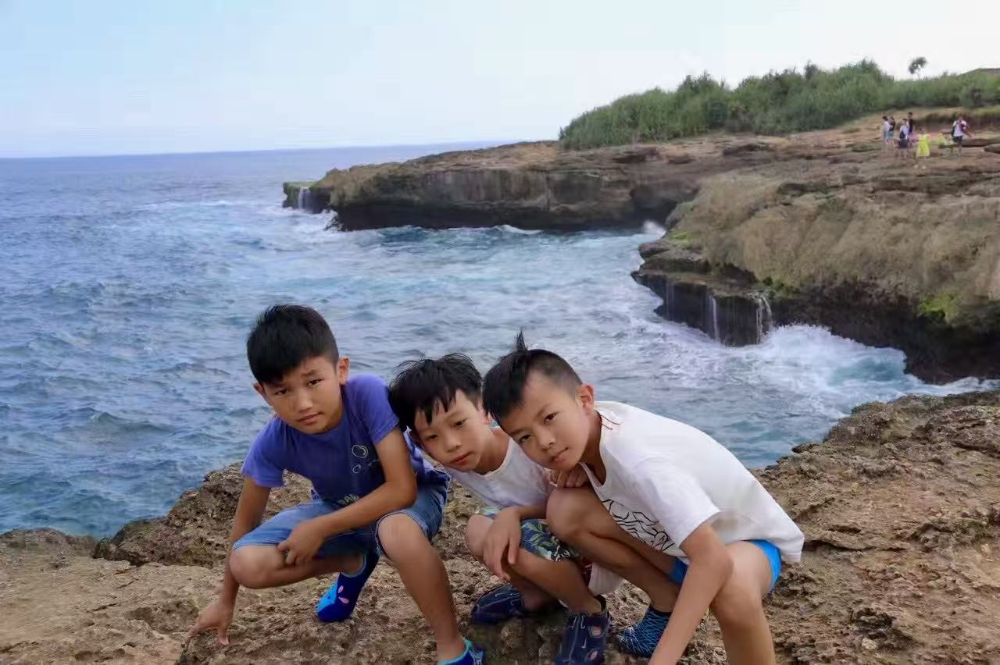
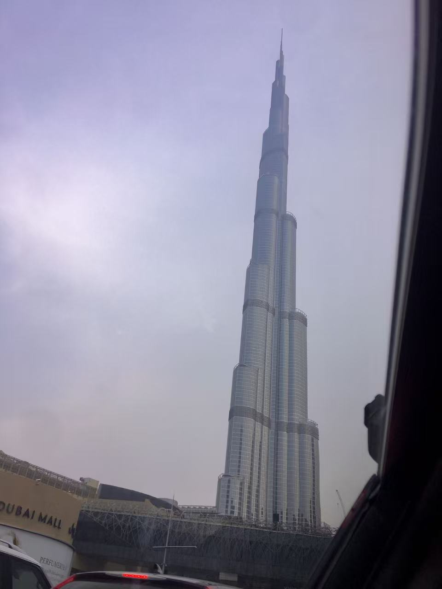
迪拜 · 阿布扎比DUBAI · ABU DHABI
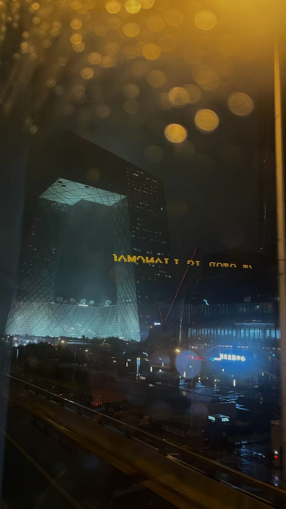
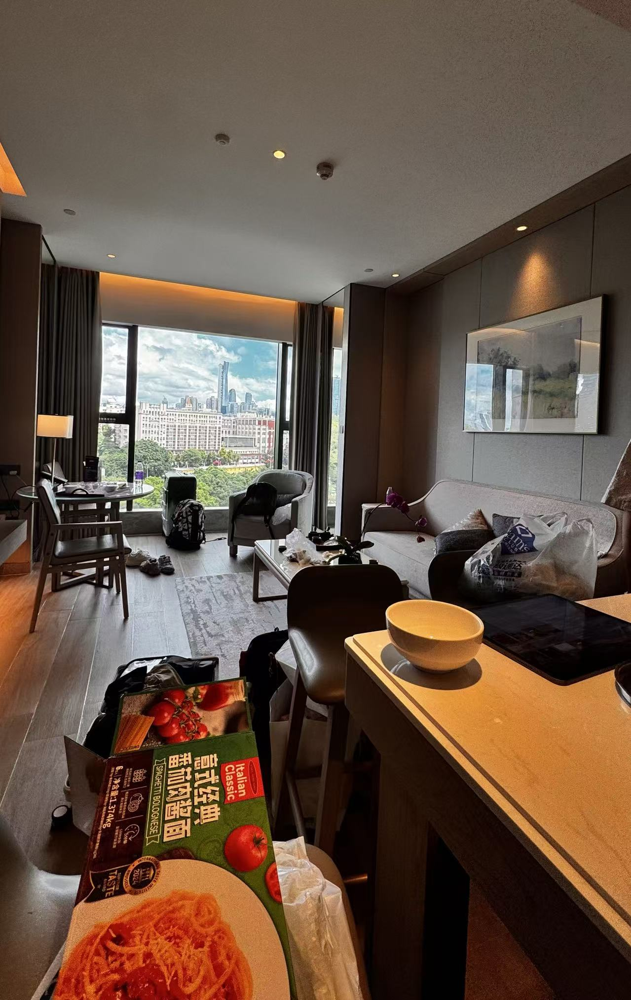
深圳 · 惠州 · 香港 · 澳门SHENZHEN · HUIZHOU · HONG KONG · MACAU
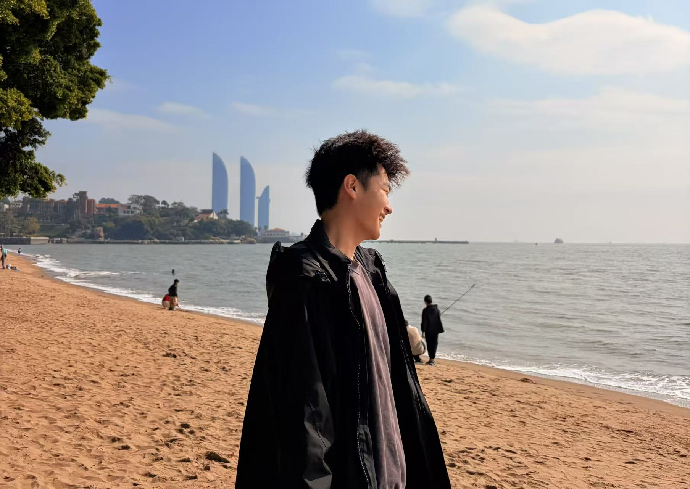
下一次出发也已经在筹备中——西亚、申根区，还有北美。。。